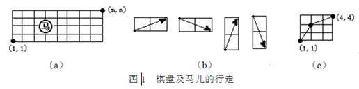
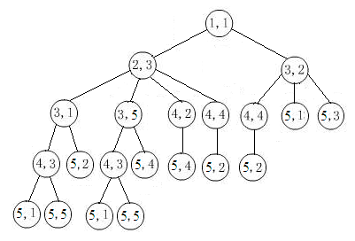

DFS（Depth First Search，深度优先搜索）和BFS（Breadth First Search，广度优先搜索）是两种典型的搜索算法。下面通过一个实例来比较一下深度优先搜索和广度优先搜索的搜索过程。
【例1】马的行走路径
设有一个n*m的棋盘（2<=n<=50，2<=m<=50），在棋盘上任一点有一个中国象棋马，如图1（a）所示。马行走的规则为：（1）马走日字；（2）马只能向右走，即如图1（b）所示的4种走法。
编写一个程序，输入n和m，找出一条马从棋盘左下角（1，1）到右上角（n，m）的路径。例如：输入n=4、m=4时，输出路径 (1,1)->(2,3)->(4,4)。这一路经如图1（c）所示。若不存在路径，则输出"No！"

（1）编程思路。
将棋盘的横坐标规定为i，纵坐标规定为j，对于一个n×m的棋盘，i的值从1到n，j的值从1到m。棋盘上的任意点都可以用坐标（i，j）表示。
马有四种移动方向，每种移动方法用偏移值来表示，将这些偏移值分别保存在数组dx和dy中，可定义数组int dx[4]={1,1,2,2}和int dy[4]={-2,2,-1,1}。
定义数组int visit[51][51]标记某位置马儿是否已走过，初始时visit数组的所有元素值均为0，visit[i][j]=0表示坐标（i,j）处马儿未走过。同时为了后面输出路径方便，在标记visit[i][j]的值时，可以将其设置为其前一个位置的信息，例如visit[i][j] = x*100+y，它表示马儿由坐标（x,y）走到坐标（i,j）处。
（2）采用深度优先搜索编写的源程序。
#include <iostream>
using namespace std;
#define N 51
struct Node
{
int x;
int y;
};
int main()
{
int n,m;
int dx[4]={1,1,2,2};
int dy[4]={-2,2,-1,1};
int visit[N][N]={0};
Node s[N*N],cur,next; // s为栈
int top,i,x,y,t; // top为栈顶指针
cin>>n>>m;
top=-1; // 栈S初始化
cur.x=1; cur.y=1;
visit[1][1]=-1; // 点(1,1)为出发点，无前驱结点
s[++top]=cur; // 初始结点入栈；
bool flag= false; // 置搜索成功标志flag为假
while(top>=0 && !flag) // 栈不为空
{
cur=s[top--]; // 栈顶元素出栈
if (cur.x==n && cur.y==m)
{
flag=true;
x=n; y=m;
while (visit[x][y]!=-1)
{
cout<<"("<<x<<","<<y<<") <-- ";
t=visit[x][y];
x=t/100;
y=t%100;
}
cout<<"(1,1)"<<endl;
break;
}
for (i=0;i<4;i++)
{
x=cur.x+dx[i]; y=cur.y+dy[i];
if(x >=1 && x<=n && y>=0 && y<=m && visit[x][y]==0)
{
visit[x][y] = (cur.x)*100+cur.y; // 映射保存前驱结点信息
next.x=x; next.y=y; // 由cur扩展出新结点next
s[++top]=next; // next结点入栈
}
}
}
if (!flag)
cout<<"No path!"<<endl;
return 0;
}
为理解深度优先搜索的结点访问顺序，可以在上面源程序中的出栈语句后加上一条语句
cout<<"("<<cur.x<<","<<cur.y<<") -- "; 输出结点的出栈访问顺序。
（3）DFS的搜索过程。
以输入5,5为例，用树形结构表示马可能走的所有过程（如下图），求从起点到终点的路径，实际上就是从根结点开始搜索这棵树。

马从（1，1）开始，按深度优先搜索法，扩展出两个结点（2,3）和（3,2）依次入栈，之后（3,2）出栈，即走一步到达（3,2），判断是否到达终点，若没有，则继续往前走，扩展出结点（4,4）、（5,1）、（5,3）依次入栈，再走一步到达（5,3），没有到达终点，继续往前走，（5,3）的下一步所走的位置不在棋盘上，则另选一条路径再走；（5,1）出栈，即走到（5,1）；…，直到到达（5,5），搜索过程结束。
以输入5,5为例，输出的深度优先访问顺序为：
(1,1) -- (3,2) -- (5,3) -- (5,1) -- (4,4) -- (5,2) -- (2,3) -- (4,2) -- (5,4) -- (3,5) -- (4,3) -- (5,5)。
（4）采用广度优先搜索编写的源程序。
#include <iostream>
using namespace std;
#define N 51
struct Node
{
int x;
int y;
};
int main()
{
int n,m;
int dx[4]={1,1,2,2};
int dy[4]={-2,2,-1,1};
int visit[N][N]={0};
Node q[N*N],cur,next; // q为队列
int front,rear,i,x,y,t; // front为队头指针，rear队尾指针
cin>>n>>m;
front=rear=0; // 队列q初始化
cur.x=1; cur.y=1;
visit[1][1]=-1; // 点(1,1)为出发点，无前驱结点
q[rear++]=cur; // 初始结点入队
bool flag= false; // 置搜索成功标志flag为假
cout<<"结点访问顺序为：";
while(rear!=front && !flag) // 队列不为空
{
cur=q[front++]; // 队头元素出队
cout<<"("<<cur.x<<","<<cur.y<<") -- ";
if (cur.x==n && cur.y==m)
{
flag=true;
x=n; y=m;
cout<<endl;
cout<<"行走路径为：";
while (visit[x][y]!=-1)
{
cout<<"("<<x<<","<<y<<") <-- ";
t=visit[x][y];
x=t/100;
y=t%100;
}
cout<<"(1,1)"<<endl;
break;
}
for (i=0;i<4;i++)
{
x=cur.x+dx[i]; y=cur.y+dy[i];
if(x >=1 && x<=n && y>=1 && y<=m && visit[x][y]==0)
{
visit[x][y] = (cur.x)*100+cur.y; // 映射保存前驱结点信息
next.x=x; next.y=y; // 由cur扩展出新结点next
q[rear++]=next; // next结点入栈
}
}
}
if (!flag)
cout<<"No path!"<<endl;
return 0;
}
（5）BFS的搜索过程。
结合上面的搜索图，广度优先搜索采用自上而下，从左到右的顺序搜素结点。因此，结点访问顺序为：(1,1) -- (2,3) -- (3,2) -- (3,1) -- (3,5) -- (4,2) -- (4,4) -- (5,1) -- (5,3) -- (4,3) -- (5,2) -- (5,4) -- (5,5)。
【例2】Knight Moves （POJ 2243）
Description
A friend of you is doing research on the Traveling Knight Problem (TKP) where you are to find the shortest closed tour of knight moves that visits each square of a given set of n squares on a chessboard exactly once. He thinks that the most difficult part of the problem is determining the smallest number of knight moves between two given squares and that, once you have accomplished this, finding the tour would be easy.
Of course you know that it is vice versa. So you offer him to write a program that solves the "difficult" part.
Your job is to write a program that takes two squares a and b as input and then determines the number of knight moves on a shortest route from a to b.
Input
The input will contain one or more test cases. Each test case consists of one line containing two squares separated by one space. A square is a string consisting of a letter (a-h) representing the column and a digit (1-8) representing the row on the chessboard.
Output
For each test case, print one line saying "To get from xx to yy takes n knight moves.".
Sample Input
e2 e4
a1 b2
b2 c3
a1 h8
a1 h7
h8 a1
b1 c3
f6 f6
Sample Output
To get from e2 to e4 takes 2 knight moves.
To get from a1 to b2 takes 4 knight moves.
To get from b2 to c3 takes 2 knight moves.
To get from a1 to h8 takes 6 knight moves.
To get from a1 to h7 takes 5 knight moves.
To get from h8 to a1 takes 6 knight moves.
To get from b1 to c3 takes 1 knight moves.
To get from f6 to f6 takes 0 knight moves.
（1）采用深度优先搜索编写的源程序。
#include <stdio.h>
int dx[]={1,1,2,2,-1,-1,-2,-2};
int dy[]={2,-2,1,-1,2,-2,1,-1};
int step[8][8];
void dfs(int si,int sj,int moves)
{
if(si<0||sj<0||si>=8||sj>=8||moves>=step[si][sj]) return;
step[si][sj]=moves;
for(int i=0;i<8;i++)
dfs(si+dx[i],sj+dy[i],moves+1);
}
int main()
{
char src[3],dest[3];
while(scanf("%s%s",src,dest)!=EOF)
{
for(int i=0;i<8;i++)
for(int j=0;j<8;j++)
step[i][j]=10;
dfs(src[0]-'a',src[1]-'1',0);
printf("To get from %s to %s ",src,dest);
printf("takes %d knight moves.\n",step[dest[0]-'a'][dest[1]-'1']);
}
return 0;
}
（2）采用广度优先搜索编写的源程序。
#include <stdio.h>
struct point{
int x,y;
int step;
};
int dx[]={1,1,2,2,-1,-1,-2,-2};
int dy[]={2,-2,1,-1,2,-2,1,-1};
int BFS(char src[],char dest[])
{
if (src[0]==dest[0] && src[1]==dest[1])
return 0;
point from,to,cur,next,q[64];
int front,rear,vis[8][8]={0};
front=rear=0;
from.x=src[0]-'a';
from.y=src[1]-'1';
from.step=0;
to.x=dest[0]-'a';
to.y=dest[1]-'1';
q[rear++]=from;
while(front<rear)
{
cur=q[front++];
for(int i=0;i<8;i++)
{
next.x=cur.x+dx[i];
next.y=cur.y+dy[i];
if(next.x<0||next.x>7||next.y<0||next.y>7)
continue;
if (next.x==to.x && next.y==to.y)
return cur.step+1;
if (vis[next.x][next.y]==0)
{
next.step=cur.step+1;
q[rear++]=next;
vis[next.x][next.y]=1;
}
}
}
return -1;
}
int main()
{
char src[3],dest[3];
while(scanf("%s%s",src,dest)!=EOF)
{
printf("To get from %s to %s ",src,dest);
printf("takes %d knight moves.\n",BFS(src,dest));
}
return 0;
}
（3）上面两种方法的分析比较。
在采用DFS搜索时，int step[8][8]数组保存了从某个起点走到棋盘上每个点的最少步数，如step[5][4]就保存了从起点到棋盘第6行第5列方格（即F5）最少步数。
递归函数dfs(int si,int sj,int moves)表示第moves歩走到位置（si,sj），可记录step[si][sj]=moves；下一步moves+1可走到（si+dx[i],sj+dy[i]），故递归调用dfs(si+dx[i],sj+dy[i],moves+1)即可。由于在递归调用时，某个位置可能通过多条路径反复到达，因此，若moves>=step[si][sj]，表示位置（si,sj）可用更少的步数到达，当前这条路径不再是最短，直接返回不处理。这样就要求对数组step[][]的每个元素预先赋一个较大的值，以保证第1次访问位置（si,sj）时，出现moves<step[si][sj]，从而可修改step[si][sj]（即step[si][sj]=moves）。
在采用BFS搜索时，BFS是按一层一层来访问的，层层搜索每一层就代表了一步。BFS优先访问的是兄弟节点，只有这一层全部访问完才能访问下一层，也就是说BFS第几层就代表从起点最少需要多少歩走到当前层的结点；而DFS是按递归来实现的，它优先搜索深度，到一条路径走不下去了再回溯，优先访问的是没有访问过的子结点。
由此可体会：BFS用来搜索最短径路的解是比较合适的，比如求最少步数的解，最少交换次数的解。因为BFS搜索过程中遇到的解一定是离根最近的，所以遇到一个解，一定就是最优解，此时搜索算法可以终止。这个时候一般不适宜使用DFS，因为DFS搜索到的解不一定是离根最近的，只有全局搜索完毕，才能从所有解中找出离根的最近的解。
DFS适合搜索全部的解，因为要搜索全部的解，那么BFS搜索过程中，遇到离根最近的解，并没有什么用，也必须遍历完整棵搜索树，DFS搜索也会搜索全部，但是相比DFS不用记录过多信息，所以搜素全部解的问题，DFS显然更加合适。